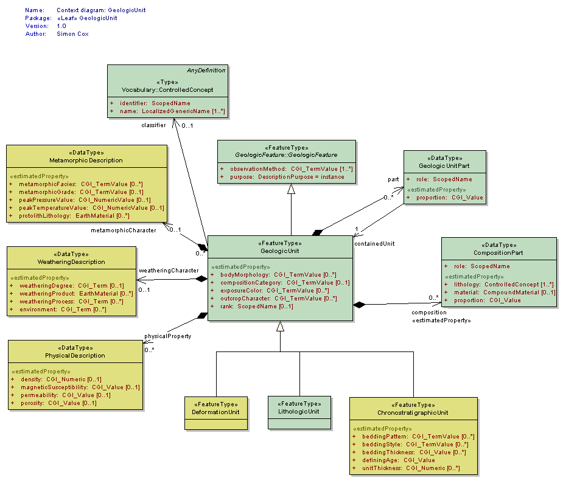
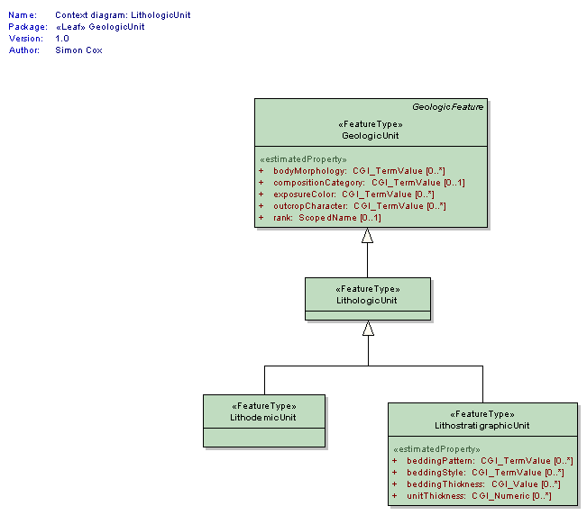

Package GeoSciML/GeologicUnit
The GeoSciML GeologicUnit Package contains classes representing notional geologic units, whose complete and precise extent is inferred to exist. Explicit spatial properties are available through association with a MappedFeature.
Geologic units includes both formal units (i.e. formally adopted and named in the official lexicon) and informal units (i.e. named but not promoted to the lexicon) and unnamed units (i.e. recognisable and described and delineable in the field but not otherwise formalised).
A number of specialized unit classes are provided.
Class Summary |
|
| <<FeatureType>> Classes | |
ChronostratigraphicUnit
<<FeatureType>>
|
A Geologic Unit defined by its age. The by convention, the definingAge is the age of formation (deposition of sedimentary rock, crystallization of igneous rock). A chronostratigraphic unit may have properties characteristic of a LithostratigraphicUnit, thus the unitThickness and bedding properties are included in this element. |
DeformationUnit
<<FeatureType>>
|
GeologicUnit defined by containment of or association with some geologic structure. DeformationUnits may be predominantly brittle, discontinuous deformation, ductile/plastic deformation or a combination of these. Includes fault zone, which is a body of rock characterized by deformation associated with some ShearDisplacementStructure feature, and mapped as such. If there are many faults contained in the DeformationUnit then these form a FaultSystem, so there is a zero to one association between DeformationUnit and ShearDisplacementStructure, with the ShearDisplacementStructure being either a FaultSystem, DuctileShearStructure or a Fault. The faults are not the geologic unit, the deformed rock is the geologic unit. A ShearDisplacementStructure may be associated with 0 to one DeformationUnit. Such a DeformationUnit may have 1 or more parts distinguished by different kinds of fault rocks. Zero represents the case in which the DeformationUnit is not mapped or described. DeformationUnits may also be defined by presence of cleavage, jointing, structures with a particular orientation (e.g. 'southeast-dipping bedding domain'). |
GeologicUnit
<<FeatureType>>
|
Operationally, the GeologicUnit element is a container used to associate geologic properties with some mapped occurrence (through GeologicFeature.occurrence -> MappedFeature link), or with a geologic unit ControlledConcept in a vocabulary (through the GeologicUnit.classifier ->ControlledConcept link). Conceptually, may represent a body of material in the Earth whose complete and precise extent is inferred to exist (NADM GeologicUnit, Stratigraphic unit in sense of NACSN or Intnl Stratigraphic Code), or a classifier used to characterize parts of the Earth (e.g. lithologic map unit like 'granitic rock' or 'alluvial deposit', surficial units like 'till' or 'old alluvium'). Spatial properties are only available through association with a MappedFeature. Includes both formal units (i.e. formally adopted and named in the official lexicon) and informal units (i.e. named but not promoted to the lexicon) and unnamed units (i.e. recognisable and described and delineable in the field but not otherwise formalised). Will be made Abstract when a complete (enough) set of specialized subtypes is defined. |
LithodemicUnit
<<FeatureType>>
|
A geologicUnit that lacks stratification, and is defined by lithology Generally represents predominantly intrusive, highly deformed and/or metamorphosed rock |
LithologicUnit
<<FeatureType>>
|
Element representing a GeologicUnit defined by lithology independent of subdividing external and internal boundaries. May be stratified or non-stratified. This concept corresponds to LithostratigraphicUnit in the sense of the International Stratigraphic Code. Usage here follows distinction of stratified and non-stratified units from North American Code of Stratigraphic Nomenclature to represent possible presence of stratification-related properties in stratified units, but the explicit absence of those properties in an non-stratified (Lithodemic) unit. May represent a particular body of rock (a NADM geologic unit), or may represent a 'kind' of rock body characterized by some internal sequence of rock types and the presence of various geologic (typically sedimentary) structures. This element will be made Abstract when a complete (enough) set of specialized data structures for subtypes is defined. |
LithostratigraphicUnit
<<FeatureType>>
|
Geologic unit that has stratification, allowing specification of thickness and bedding-related properties. Note that while this usage corresponds to the formally definition of 'Lithostratigaphic unit' as defined in the North American Code of Stratigraphic Nomenclature, usage of this element does not denote definition or description of a unit in the sense of the code, only that stratification is present and can be described. |
| <<DataType>> Classes | |
CompositionPart
<<DataType>>
|
Element to represent composition of a geologic unit in terms of earth material constituents. |
GeologicUnitPart
<<DataType>>
|
GeologicUnitPart associates a GeologicUnit with another GeologicUnit that is a proper part of that unit. Parts may be formal or notional . Formal parts refer to a specific body of rock, as in formal stratigraphic members. Notional parts refer to assemblages of particular EarthMaterials with particular internal structure, which may be repeated in various places within a unit (e.g. 'turbidite sequence', 'point bar assemblage', 'leucosome veins') |
MetamorphicDescription
<<DataType>>
|
MetamorphicDescription describes the character of metamorphism applied to a CompoundMaterial or GeologicUnit using one or more properties including estimated intensity (grade; eg high grade, low grade), characteristic metamorphic mineral assemblages (facies; eg, greenschist, amphibolite), peak P-T estimates, and protolith material if known. |
PhysicalDescription
<<DataType>>
|
PhysicalDescription describes a limited but commonly used set of physical properties of Rocks and UnconsolidatedMaterials. The Working Group recognizes that this set is an incomplete subset of potential physical properties that could be used to describe Rocks and UnconsolidatedMaterials, but it will likely cover most use cases for GeoSciML version 2. Revision/extension of this list is antcipated in future versions. |
WeatheringDescription
<<DataType>>
|
Data type is a container for properties describing the nature of a GeologicUnit at its interface with the atmosphere. Soil profile description would have to be constructed as a GeologicUnit with parts representing the various horizons in the profile. |
| <<CodeList>> Classes | |
GeologicUnitType
<<CodeList>>
|
|
Tagged Values |
||
| Tag | Value | Notes |
| xsdDocument | geologicUnit.xsd | Description: Relative path to XML Schema document corresponding to this package. |
UML Diagram: Context diagram: GeologicUnit

UML Diagram: Context diagram: LithologicUnit
